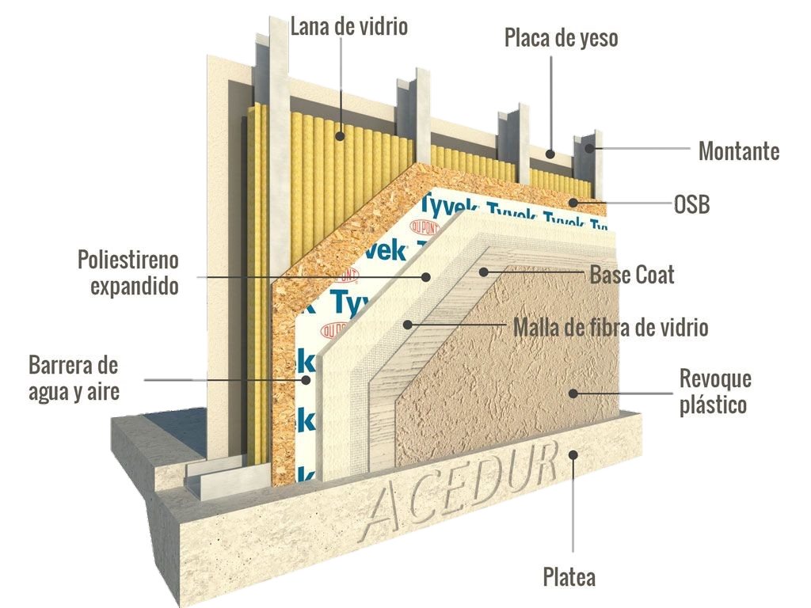

Steel Framing
Construcción sustentable y eficiente
¿Qué es Steel Framing?
El Steel framing es un sistema de construcción moderno que no utiliza ladrillos ni concreto durante el proceso de montaje de la pared. Es ágil, versátil, liviano y flexible, que permite ejecutar su construcción de manera más rápida, económica, segura y confortable con la máxima calidad.Su estructura está compuesta por perfiles de acero galvanizado de muy bajo espesor, junto a una cantidad de componentes o sub-sistemas(estructurales, aislaciones, terminaciones, etc.) Su proceso constructivo se realiza por metro cuadrado, generando así, un menor costo debido a que la cantidad exacta de perfiles de acero a emplear, se calculan con precisión así no hay desperdicio.
Platea de Hormigón
Constituye la plataforma sobre la cual se asienta la casa. Debido a que el Steel Frame requiere un menor peso de construcción respecto de la tradicional, permite que las fundaciones no deban ser tan profundas, ahorrando en costosos insumos como hormigón y hierro.
Revoque plástico
Se lo utiliza para reemplazar el revoque fino y la pintura. Es un material muy empleado en paredes exteriores e interiores. Es impermeable, flexible, no permite la formación de hongos y no se descascara ni se despega. El revoque plástico es una alternativa más de revestimiento exterior, ya que el sistema Steel Frame permite usar otros acabados como: chapa acanalada, placa cementicia, ladrillo y placas de siding entre muchos otros.
Base Coat
Es un material cementicio modificado con polímeros acrílicos, que se utiliza como nivelador. Está conformado por dos componentes: cemento en polvo y una emulsión acrílica acuosa. Posee una excelente adherencia, flexibilidad, dureza, plasticidad y repelencia al agua. En en el Steel Framing, se utiliza como adhesivo para fijar las placas de poliestireno expandido, malla de refuerzo y como base niveladora de superficie.
Malla de fibra de vidrio
La red de fibra de vidrio se emplean a fin de reforzar la aplicación de revoques (base coat) en las placas de poliestireno expandido (EPS). Su función es prevenir la formación de grietas fisuras y microfisuras provocadas por el movimiento de asentamiento de los materiales y agentes externos.
Poliestireno expandido
El poliestireno expandido (EPS) es una espuma rígida y resistente de celdas cerradas que albergan aire, lo que le otorga grandes propiedades como aislantes térmicos y acústico. Por lo tanto, se usa como material aislante de construcción. Se caracteriza por su ligereza, resistencia a la humedad y capacidad de absorción de los impactos.
Barrera de agua y aire
Es una membrana ligera y durable que por su lado exterior evita el paso del agua y el aire, pero por su lado interior es permeable, de manera que deja pasar el vapor, evitando así que se condense y acumule humedad y hongos. Ayuda a conservar la casa fresca en verano, caliente en invierno y seca todo el año.
Placa OSB
La placa OSB se usa para rigidizar la estructura. Son aplicadas sobre los montantes, es decir, los perfiles de acero galvanizado PGC que sostienen verticalmente la estructura, impiden los movimientos horizontales de lado a lado. Vienen en diferentes espesores: 9, 11, 10, 18,30 y hasta 25 mm.
Lana de vidrio
Material aislante que aísla a los paneles de las temperaturas y los sonidos. La lana de vidrio se coloca en medio del panel, entre los perfiles de acero galvanizado PGC. Hacen más cómoda y silenciosa la casa, a la vez que disminuyen los costos de energía para enfriarla y calefaccionarla.
Montantes
Los perfiles de acero galvanizado constituyen la estructura de la casa, y componen las soleras y los montantes que soportan las cargas estructurales. El acero es un material liviano y resistente, de modo que se logra la misma resistencia estructural que con la construcción húmeda tradicional, pero con un peso considerablemente inferior, lo que implica importantes ahorros en fundaciones y movimientos de suelos.
Placa de yeso
La placa de yeso se aplica como revestimiento interior. Viene en espesores de: 7, 9 y 12,50. Cumple la misma función que el enduido con yeso que termina el revoque fino de la construcción tradicional.
Beneficios del Steel Frame
Aislación Acústica
El sonido externo e interno se ve más reducido que con la construcción tradicional. Provee una mayor aislación de los ruidos entre los ambientes interiores de la casa.
Aislación Térmica
Mejora la conservación delcalor y el frío de los ambientes, manteniendo la temperatura interior constante.
Menor consumo Energético
Reduce los gastos de energía bajando el uso de la calefacción y el aire acondicionado.
Velocidad en la construcción
Reduce notablemente los tiempos de obra. Hasta 2 veces menor a comparación de la construcción tradicional.
Solidez en la estructura
Las vigas de acero brindan una solidez a la estructura capaz de soportar los climas más extremos
Durabilidad
La estructura de acero le brindauna durabilidad superior a la construcción.